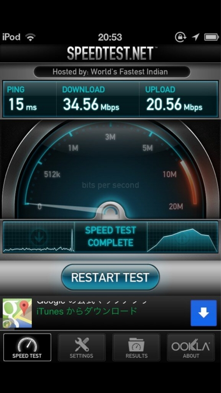
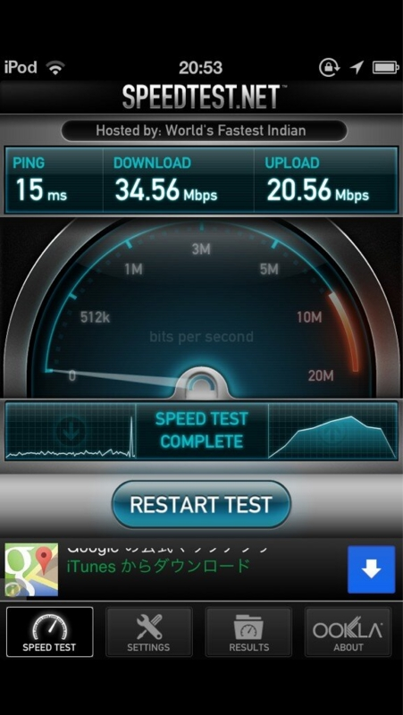

タダで無線LANが使える roadwifi
執筆日時：

道路設備を利用して、屋外で無線LANを構築するという社会実験がアキバの一部道路で始まった。実験期間は2月18日（月）～3月18日（月）。期間中は公衆用SSIDも設けられ、誰でも利用可能だ。
@shibayan とアキバに寿司食いに行ったとき、たまたまこれを見つけた。よくわかんないけど、縦割り行政でこういうことを実現するのは本来難しいのだけれど、実現したったで！ ということなんだろう。

その日（2月20日だっけかな？）はむちゃくちゃ寒かったのだけれど、@shibayan はさっそくノートパソコンを出して試してた。自分も iPhone 5 でスピードテストをしてみる。
 

左がうちの iPhone 5 で、右が @shibayan の Android iPod touch。なんでこんなに差があるんだろう……。